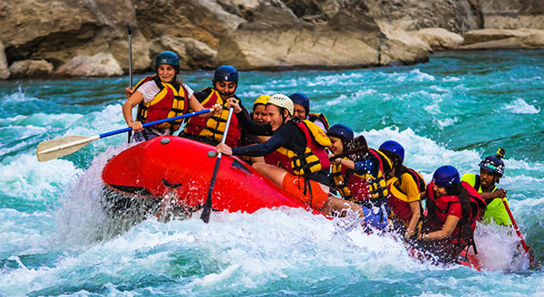
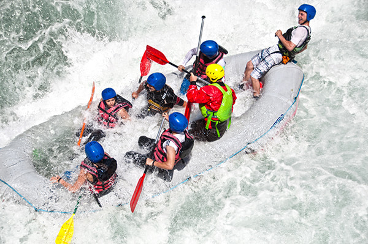

Ready for the Ultimate Adventure? Feel the rush, embrace the thrill, and conquer the rapids with an unforgettable whitewater rafting experience! Whether you're a first-timer or a seasoned paddler, our expert guides will lead you through exhilarating twists and turns, breathtaking scenery, and heart-pounding drops. Perfect for adrenaline seekers, group outings, or family fun, this is your chance to escape the ordinary and dive into adventure. Book your trip today and let the river take you on the ride of a lifetime!


White Water Rafting
History
What started as a passion for adventure and the great outdoors turned into a mission share the thrill of whitewater rafting with the world. Founded in 2000, White Water Rafting began with a small team of expert river guides and a dream—to create unforgettable experiences on some of the most breathtaking rivers. With a commitment to safety, sustainability, and adrenaline-fueled fun, we’ve grown into one of the top rafting companies, welcoming adventurers of all skill levels.Whether you’re seeking a heart-pounding ride through raging rapids or a scenic float with family and friends, White Water Rafthiing is here to make your journey one for the books. Join us and let the river lead the way! 🚣♂️🌊 Would you like me to customize this further with specific details about your company?
Adventure Awaits You!